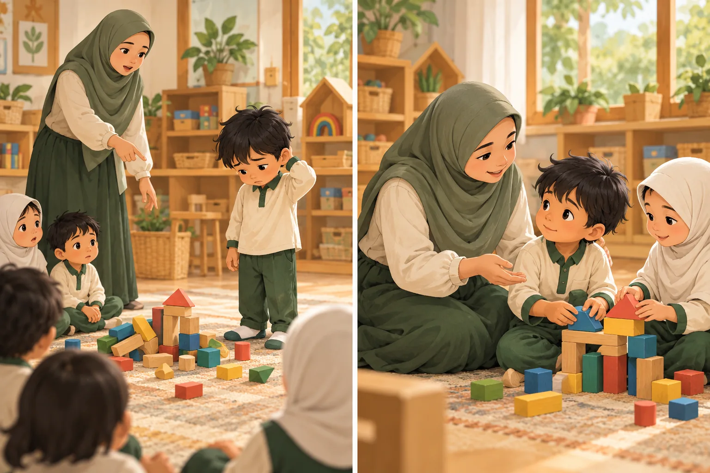
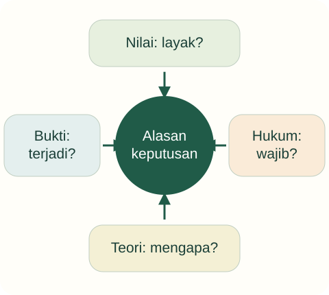

Tujuan pembelajaran
- Membedakan fungsi lima landasan pendidikan.
- Memisahkan klaim nilai, teori, bukti empiris, dan ketentuan hukum.
- Menyusun alasan keputusan tanpa mencampur jenis bukti.
Apa yang membuat sebuah keputusan pendidik dapat dipertanggungjawabkan?

Guru meminta anak meminta maaf di depan kelas. Alasannya: aturan sekolah, ajaran akhlak, kebiasaan masyarakat, dan keyakinan bahwa rasa malu membuat anak jera. Apakah semua alasan itu memiliki kekuatan yang sama?
- Apa perbedaan posisi dan relasi orang dewasa dengan anak?
- Apakah alasan “sudah menjadi kebiasaan” cukup membenarkan tindakan?
Temukan persoalan konseptual
Sebelum membaca penjelasan, pisahkan kejadian yang dinyatakan dalam kasus dari dugaan Anda. Gunakan pertanyaan berikut untuk menyiapkan analisis.
- Apa tujuan pendidikan yang sedang dipertaruhkan?
- Pengalaman apa yang dialami anak, dan informasi apa yang belum tersedia?
- Konsep atau jenis sumber apa yang diperlukan untuk menilai tindakan pendidik?
Alasan keputusan

Landasan berbeda menjawab pertanyaan berbeda. Dasar hukum tidak menggantikan penjelasan teori; penelitian juga tidak dengan sendirinya menentukan nilai yang harus dipilih.
Empat jenis alasan perlu dibedakan fungsinya sebelum digunakan untuk menilai tindakan.
Landasan filosofis: arah dan asumsi
Landasan filosofis memeriksa pandangan tentang manusia, pengetahuan, dan nilai. Pertanyaan “anak harus menjadi pribadi seperti apa?” berbeda dari “metode mana yang menghasilkan skor tertinggi?”. Pendidikan membutuhkan penetapan tujuan yang dapat diperdebatkan secara beralasan. Sebuah teknik yang berhasil membuat anak patuh belum tentu sesuai dengan tujuan kemandirian.
Mahasiswa tidak perlu menghafal semua aliran filsafat. Gunakan pertanyaan dasar untuk mengungkap asumsi: apakah anak dipandang sebagai penerima atau pelaku; apakah pengetahuan dianggap hafalan atau pemahaman yang perlu digunakan; apakah ketertiban menjadi tujuan akhir atau kondisi untuk belajar bersama.
Landasan psikologis: penjelasan tentang belajar
Landasan psikologis memberi konsep untuk memahami perkembangan, motivasi, emosi, dan belajar. Fungsinya membantu membaca kebutuhan serta kemungkinan respons, bukan menetapkan diagnosis dari pengamatan singkat. Dalam mata kuliah ini, pembahasannya dibatasi pada implikasi keputusan pendidikan. Teori perkembangan secara rinci menjadi ranah mata kuliah khusus.
Jika guru mengatakan hukuman memperbaiki perilaku, tanyakan perilaku apa, dalam durasi berapa, dan dengan akibat apa. Berhentinya tindakan sesaat tidak otomatis menunjukkan pemahaman atau pengaturan diri. Klaim efektivitas memerlukan bukti yang relevan, bukan sekadar pengalaman yang paling mudah diingat.
Landasan sosial dan religius
Landasan sosial menempatkan pendidikan dalam hubungan keluarga, budaya, bahasa, kesempatan, dan kekuasaan. Kebiasaan kelas dapat menguntungkan anak yang sudah mengenal bahasa atau aturan tertentu. Karena itu, guru perlu memeriksa apakah ketidakaktifan benar-benar kurang kemampuan atau akibat hambatan partisipasi.
Landasan religius memberi orientasi nilai, makna, dan tanggung jawab. Dalam PIAUD, nilai kasih sayang, adab, dan keteladanan dapat menuntun tindakan. Namun, sumber normatif tidak boleh dipakai sebagai pengganti penelitian ketika membuat klaim empiris. Menyebut tindakan “sesuai agama” juga memerlukan pembacaan yang bertanggung jawab, bukan kutipan tanpa konteks.
Landasan yuridis dan penalaran terpadu
Landasan yuridis menentukan hak, kewajiban, dan ketentuan penyelenggaraan. UU Sisdiknas, perlindungan anak, dan standar pendidikan membantu menentukan batas tindakan. Aturan internal lembaga tidak otomatis benar jika bertentangan dengan hak anak. Sebaliknya, mengetahui nomor peraturan belum berarti mampu merancang pengalaman belajar yang baik.
Kerangka analisis yang diusulkan: rumuskan masalah, identifikasi nilai yang dipertaruhkan, baca kebutuhan anak, periksa ketentuan, pertimbangkan alternatif, lalu tetapkan bukti untuk meninjau keputusan. Ini adalah alat latihan penalaran dalam portal, bukan prosedur baku dari satu teori. Kesimpulan sebaiknya menyebut apa yang diketahui dan apa yang masih perlu diperiksa.
Kembali ke kasus
Aturan, nilai, dan klaim psikologis perlu diperiksa dengan cara berbeda. Mengembangkan tanggung jawab tidak mengharuskan mempermalukan. Alternatifnya ialah menenangkan situasi, membantu anak mengenali dampak, dan membimbing perbaikan yang dapat dipahami. Respons berikutnya tetap diamati.
Analisis ini merupakan contoh penalaran pedagogis. Pada situasi nyata, keputusan memerlukan informasi tentang anak dan konteks lembaga.
Satu kasus, dua cara merespons
Gunakan teori pada materi di atas untuk memeriksa alasan dan akibat yang mungkin muncul. Alternatif ini merupakan contoh telaah, bukan resep untuk semua anak.
Kebiasaan sebagai satu-satunya alasan
Meminta anak meminta maaf di depan kelompok tanpa mendengar kejadian.
Risiko: mempermalukan dan mengabaikan konteks.
Keputusan dengan alasan terbuka
Mendengar anak, menjaga martabat, lalu mendampingi pemulihan relasi.
Tinjau keamanan, respons anak, dan perbaikan hubungan.
Dari melihat ke beralasan
Pasangkan alasan tindakan dengan jenis sumber: hak anak, proses belajar, nilai tanggung jawab.
Buka contoh penalaran setelah mencoba
Hak anak: ketentuan hukum yang relevan. Proses belajar: teori dan bukti empiris sesuai konteks. Tanggung jawab: argumentasi nilai. Ketiganya dapat dipakai bersama tanpa menyamakan fungsinya.
Dasar konsep dan sitasi: baca materi inti serta referensi unit ini. Adegan dan alternatif merupakan penerapan ilustratif penyusun.
Latihan terbimbing
Beri label pada tiga pernyataan: “anak berhak terlindungi”, “anak diam setelah dimarahi”, dan “rasa takut selalu memperbaiki akhlak”. Yang pertama normatif-yuridis; yang kedua observasi; yang ketiga generalisasi kausal yang belum didukung oleh observasi itu saja.
Latihan mandiri
Analisis aturan “semua anak wajib tampil sendiri di panggung”. Gunakan minimal tiga landasan, usulkan penyesuaian, dan jelaskan informasi yang dibutuhkan sebelum menerapkannya.
- Konsep digunakan dengan tepat dan dijelaskan hubungannya dengan kasus.
- Fakta dipisahkan dari interpretasi; sumber mendukung jenis klaimnya.
- Tindakan konkret, menghargai anak, dan memiliki cara peninjauan.
Lihat pembahasan
Menetapkan dasar hak dan kewajiban.
Landasan hukum memberi batas dan kewajiban. Efektivitas metode dan kebutuhan individual tetap perlu dianalisis dengan bukti yang sesuai.
Refleksi calon pendidik
Apakah saya pernah memakai kutipan atau peraturan untuk menutup diskusi tanpa menjelaskan kaitannya dengan masalah?
Catatan hanya disimpan di peramban ini. Tidak dikirim kepada dosen.
Intisari dan tindak lanjut
- Landasan pendidikan menjawab jenis pertanyaan yang berbeda.
- Nilai dan hukum tidak menggantikan bukti empiris tentang efektivitas metode.
- Keputusan perlu mempertimbangkan kebutuhan anak, alternatif, dan cara peninjauan.
Uji kembali pemahaman di atas melalui latihan mandiri. Jika alasan Anda belum menghubungkan konsep dan tindakan, baca ulang submateri terkait sebelum menandai selesai.
Referensi dan bacaan pendamping
Sumber untuk klaim khusus disebut pada uraian. Buku pendamping tidak dikutip langsung. Jenis dan batas penggunaan setiap rujukan dijelaskan di bawah.
- Republik Indonesia. (2003). Undang-Undang Nomor 20 Tahun 2003 tentang Sistem Pendidikan Nasional.Fokus Pasal 1, 3, 13, dan 28. Status UU secara keseluruhan tidak berarti seluruh pasal bebas perubahan atau putusan pengadilan.
- Republik Indonesia. (2014). Undang-Undang Nomor 35 Tahun 2014 tentang Perubahan atas Undang-Undang Nomor 23 Tahun 2002 tentang Perlindungan Anak.Dibaca bersama UU dasar dan perubahan berikutnya, termasuk UU 17/2016. Materi ini berfokus pada hak anak, bukan penetapan sanksi pidana.
- Kementerian Pendidikan Dasar dan Menengah. (2026). Peraturan Menteri Pendidikan Dasar dan Menengah Nomor 1 Tahun 2026 tentang Standar Proses pada Pendidikan Anak Usia Dini, Jenjang Pendidikan Dasar, dan Jenjang Pendidikan Menengah.Menggantikan Permendikbudristek 16/2022. Periksa ruang lingkup dan batang tubuh untuk penerapan kelembagaan.